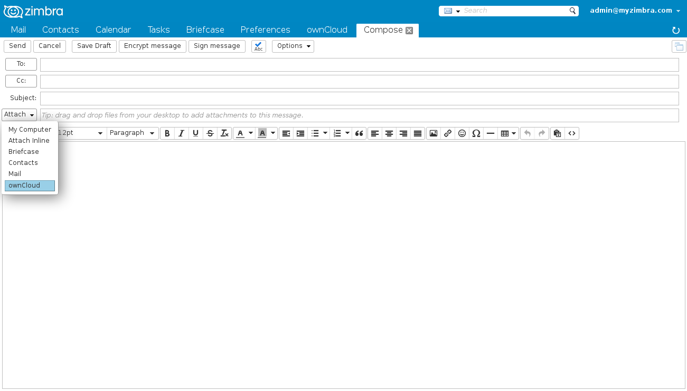
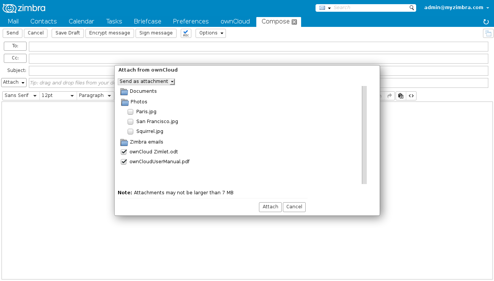
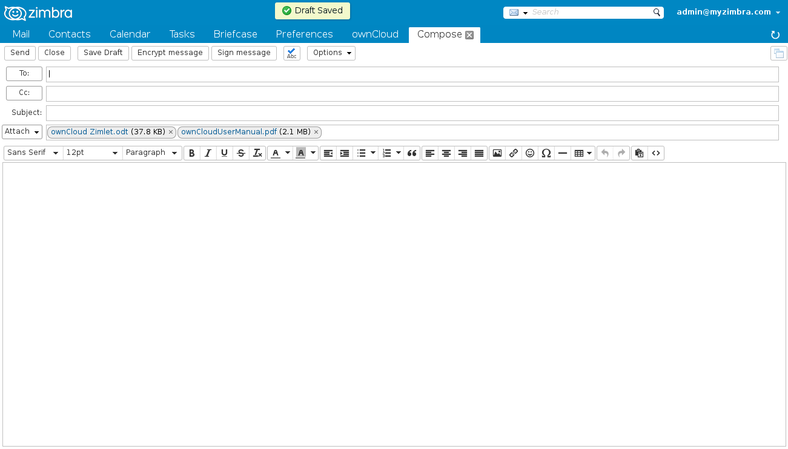
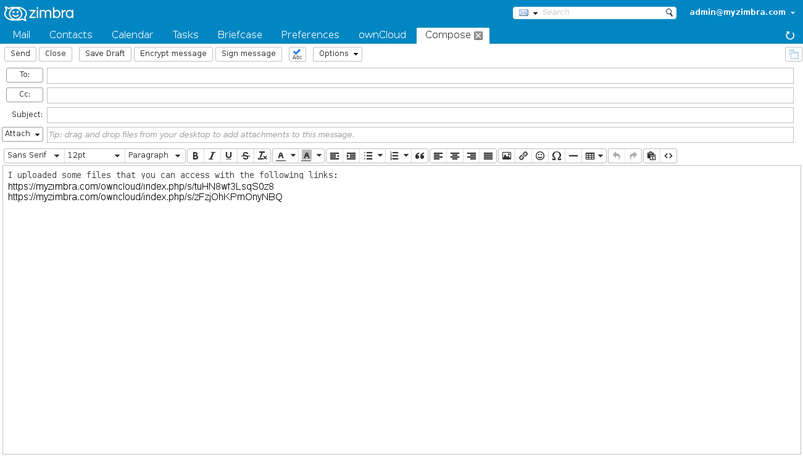
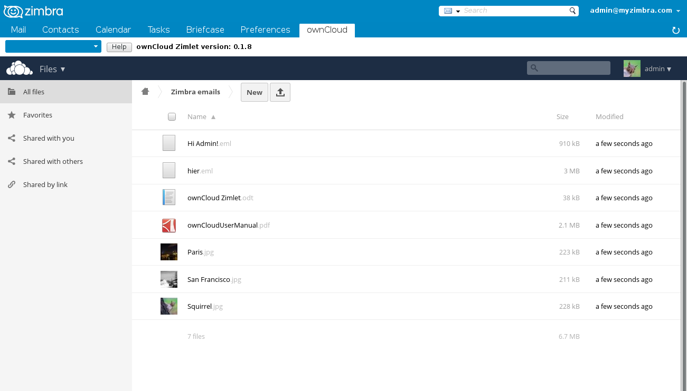
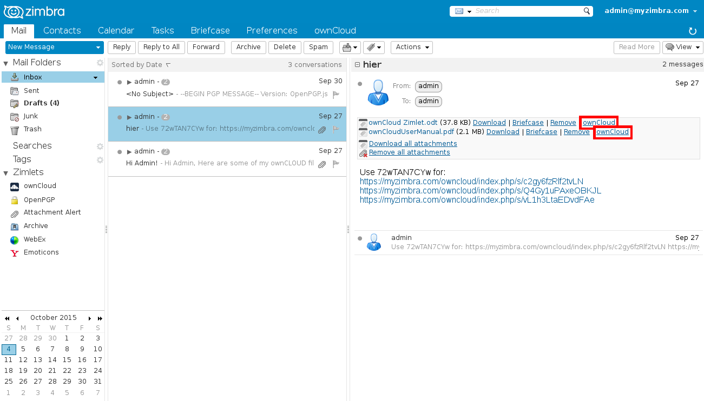

Zimbra ownCloud Zimlet User Help
Contents
- Sending attachments from ownCloud
- Sharing files with a public link
- Saving emails to ownCloud
- Saving attachments to ownCloud
- Saving briefcase documents to ownCloud
- Configure ownCloud Zimlet
- About Zimbra ownCloud Zimlet
- License and third party FOSS libraries
Sending attachments from ownCloud
When composing email in Zimbra, you can attach files from ownCloud directly. Click the arrow next to Attach.
You can select files by checking them, also you can open folders by clicking on the blue folder icons. Click Attach when done.

Attaching files may take some time, a progress round is displayed during this process. The message Draft Saved is displayed once your attachments are ready.

Sharing files with a public link
Instead of sending files as attachments, you can also share file by means of a public link. This is convenient for files that are too large to be send via email.- Link sharing does not work with external storage (Windows Shares)
- Link sharing may have been disabled by your administrator
- You can create only one public link for each file at a time
Select Share as link

You can select files by checking them, also you can open folders by clicking on the blue folder icons. Click Attach when done.

The selected files are displayed as links in the email body.

An exclamation mark appears for files that have already been shared with a public link. There can only be one public link defined for each file at a time. If you share the file again, a new link will be created, and the old link will no longer work.

Saving emails to ownCloud
You can save emails including attachments to ownCloud by selecting them in your mailbox and drag and drop them on to the ownCloud panel.Tip: You can select multiple emails by using the CTRL or SHIFT keys on your keyboard.


You can see the resulting files in ownCloud in the folder that is defined in your preferences. You can open EML files using an email client, for example Mozilla Thunderbird, Windows Essentials Mail or Apple Mail.

Saving attachments to ownCloud
You can save a single attachment by clicking on the ownCloud link that is displayed after each attachment in your inbox. The attachment is saved to ownCloud in the folder that is defined in your preferences.
Saving briefcase documents to ownCloud
You can save briefcase documents to ownCloud by selecting them from your briefcase and drag and drop them on to the ownCloud panel.Tip: You can select multiple documents by using the CTRL or SHIFT keys on your keyboard.

You can find your document in ownCloud in the folder that is defined in your preferences.

Configure ownCloud Zimlet
Find the ownCloud menu under Zimlets in your Zimbra web mail. Right click on ownCloud and select Preferences.
| Username1 | Your ownCloud username, is set to your Zimbra username by default |
| Password1 | Your ownCloud password |
| Store password2 | If checked, the password is stored in plain text in Zimbra LDAP. If not checked you have to provide password for each session |
| Default folder | Destination folder in ownCloud when saving emails, attachments and documents from Zimbra
The folder is automatically created when you click OK. |
1 Your administrator may have configured Single-Sign-On, in that case you don't need to configure your username and password.
2 Store password may have been disabled by your administrator.


Zimbra ownCloud Zimlet
If you find Zimbra ownCloud Zimlet useful and want to support its continued development, you can make donations via:- PayPal: info@barrydegraaff.tk
- Bank transfer: IBAN NL55ABNA0623226413 ; BIC ABNANL2A
Credits
- ZeXtras funding
- KovoKs funding
- BeeZim funding
- Adam Cody funding
- YetOpen S.r.l. funding
- and others.
License and third party FOSS libraries
Copyright (C) 2015 Barry de GraaffThis program is free software: you can redistribute it and/or modify
it under the terms of the GNU General Public License as published by
the Free Software Foundation, either version 3 of the License, or
(at your option) any later version.
This program is distributed in the hope that it will be useful,
but WITHOUT ANY WARRANTY; without even the implied warranty of
MERCHANTABILITY or FITNESS FOR A PARTICULAR PURPOSE. See the
GNU General Public License for more details.
You should have received a copy of the GNU General Public License
along with this program. If not, see http://www.gnu.org/licenses/.
davclient.js - Low-level JavaScript WebDAV client implementation
Copyright (C) Sven vogler under terms of the GNU General Public License version 2
ownCloud and the ownCloud Logo are a registered trademark of ownCloud, Inc.
com_zimbra_attachmail, com_zimbra_dnd
Zimbra Collaboration Suite Zimlets - Copyright (C) 2009, 2010, 2011, 2012, 2013, 2014 Zimbra, Inc.
The contents of this file are subject to the Common Public Attribution License Version 1.0 (the "License");
you may not use this file except in compliance with the License.
You may obtain a copy of the License at: http://www.zimbra.com/license
The License is based on the Mozilla Public License Version 1.1 but Sections 14 and 15
have been added to cover use of software over a computer network and provide for limited attribution
for the Original Developer. In addition, Exhibit A has been modified to be consistent with Exhibit B.
Software distributed under the License is distributed on an "AS IS" basis,
WITHOUT WARRANTY OF ANY KIND, either express or implied.
See the License for the specific language governing rights and limitations under the License.
The Original Code is Zimbra Open Source Web Client.
The Initial Developer of the Original Code is Zimbra, Inc.
All portions of the code are Copyright (C) 2009, 2010, 2011, 2012, 2013, 2014 Zimbra, Inc. All Rights Reserved.
Icons ans logo
Icons and logo where taken from the tango-icon-theme package and where released to the Public Domain by the Tango Desktop Project.